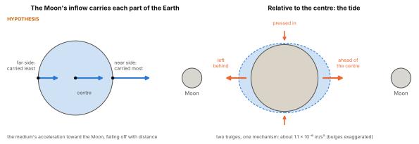
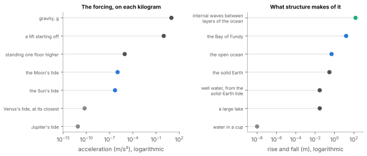
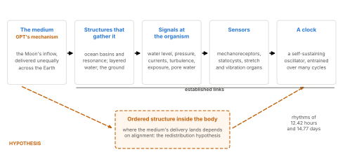

Library › The Unified Framework for the Graviton Pressure Theory
The Moon, the Tides and the Rhythms of Life
How the Medium Moves the Oceans, and How Life Keeps Time with Them
About This Paper
Life on Earth keeps time with the Moon. Corals on a reef spawn together on a few nights of the year. Animals on the shore swim, feed and breed with the tides. Some people’s cycles of sleep, mood and menstruation have been found, at times, to follow lunar rhythms. These observations raise two questions, and the standard accounts answer neither in full. What, physically, reaches the Earth from the Moon? And how does that reach a living thing?
The first question is about the tides. They are measured and predicted with great precision, and their cause is given a name: the difference in the Moon’s pull across the Earth, or the tidal part of spacetime’s curvature. Neither name says what touches the far side of the ocean and moves it.
The second question is about life. The Moon’s direct effect on any single body is tiny: it changes the weight of a kilogram by about one part in ten million. Yet the rhythms are real. Something between the Moon and the organism gathers that small effect into a signal life can use.
This paper answers both questions in the same way, by following the chain from the Moon to the organism one link at a time:
how large the Moon’s effect on the Earth is;
how the medium raises the tides, on both sides of the Earth;
how structures (ocean basins, layered water, the ground) turn a small forcing into a large response;
where the tide’s momentum and energy go;
which rhythms the Moon sets, and how to tell a rhythm set by gravity from one set by light;
how living things read these rhythms, from single cells to people;
what GPT adds inside living bodies;
how the configuration of the solar system reaches the Earth, the long cycles cultures recorded, and how a being might carry a record of the moment it began;
how to test each claim.
Claims about Graviton Pressure Theory are marked by their status, as the key shows. Where an explanation is tagged by the theory it borrows from, the tags of Part 3 are used: [N] Newtonian force, [GR] geometry, [FR] frame forces.1
The Moon’s Pull, Sized
The Moon is about 384,000 kilometres away and has about one eighty-first of the Earth’s mass. Its gravity at the Earth is about \(3.3\times10^{-5}\) metres per second squared, a three-hundred-thousandth of the Earth’s own. The Earth as a whole falls toward the Moon at that rate, as the two circle their common centre once a month, and nothing on the Earth feels it, for the reason Part 11 gave: whatever acts on all of a body alike leaves no difference inside it to detect.2
What remains is the difference across the Earth. The side facing the Moon is 6,400 kilometres closer to it than the centre; the far side is 6,400 kilometres farther. The difference between the Moon’s gravity at the surface and at the centre is \[a_{\text{tide}} \approx \frac{2GM_{\text{Moon}}R_{\oplus}}{d^{3}} \approx 1.1\times10^{-6}\ \text{m/s}^2 ,\] about one ten-millionth of the Earth’s surface gravity, \(g\). This is the Moon’s tide-raising acceleration. The Sun is far more massive but far more distant, and its tide-raising acceleration is just under half the Moon’s, about \(5\times10^{-7}\) metres per second squared.
Every claim about the Moon’s effect on living things has to meet this number. Climbing one flight of stairs, three metres, reduces the Earth’s gravity on a person by about \(9\times10^{-6}\) metres per second squared, about a millionth of its value: eight times more than the Moon ever changes it. Any account in which the Moon acts on each cell directly, through its weight, must explain why a cell would notice the Moon and not the stairs. Figure 2 (left) sets the Moon’s tide against everyday accelerations.
The number does not end the inquiry. It locates it. The Moon’s effect on any single kilogram is small. Its effect on a large body of water, on layered water, or on a living clock that adds up a weak signal over many cycles is not small at all, as the following sections show.
Tides Through the Medium
What the Tides Show
The oceans rise and fall twice a day, about 50 minutes later each day, with high water on the side of the Earth facing the Moon and also on the side facing away. The Sun adds its own smaller tide. When the Sun and Moon line up, at new moon and at full moon alike, the two tides add and the range is greatest: the spring tides. When they stand at right angles, at the quarter moons, they partly cancel: the neap tides. The solid Earth rises and falls too, by up to about 30 centimetres, too smoothly for anyone to feel.3
The Standard Reading
The tides are taught as the difference in the Moon’s pull across the Earth [N]. In General Relativity they are geodesic deviation, the tidal part of spacetime’s curvature, the one part of gravity that no change of viewpoint can remove [GR]. Popular accounts often add a centrifugal force, from the Earth’s swing around the common centre of the Earth and Moon, to explain the bulge on the far side [FR].
Each of these gives the right numbers, and tide tables are computed from them with great precision. None names what reaches the ocean. The Newtonian account names a difference between two pulls and no carrier for either. The geometric account names a curvature. The centrifugal account names a force that exists only in a rotating frame, and is not needed at all when the tides are worked out from a frame that is not rotating. Ask what touches the water on the far side of the Earth, and moves it away from the Moon, and the standard accounts have no answer to give.
What GPT Proposes

The far-side bulge is the test of any account of the tides, and here it needs no extra force. [Argued] The far-side water is not pushed away from the Moon. It is carried toward the Moon, like everything else on the Earth, but less strongly than the Earth’s centre. The centrifugal force of the popular account is a bookkeeping device of the rotating frame. In the medium, the cause is located: the medium itself, delivering slightly less on the far side than at the centre.
Does it match what is observed?
Yes. [Argued] The medium’s acceleration toward any mass is calibrated once, against measured gravity, so the Moon’s and Sun’s tide-raising accelerations come out exactly as in the Newtonian account. Everything built on those accelerations follows unchanged: two high waters a day; the Sun’s tide just under half the Moon’s; spring tides at both new and full moon; neap tides at the quarters; and the flexing of the solid Earth, which superconducting gravimeters record continuously, resolving the tide to better than a billionth of \(g\).5 GPT changes none of the predictions. It names the carrier.
Shading.
The first edition explained the near-side bulge as a “pressure shadow” cast by the Moon. The bulk flow carries the measured force (Part 1), and any additional shading by the Moon is bounded by the measured limits on gravitational shielding; it contributes nothing measurable to the tide.6 A shadow alone would also struggle with the far side, where the Moon casts nothing. The inflow accounts for both bulges at once.
Why the tide is late.
The bulges of Figure 1 are an idealisation: the shape the water would take if it could follow the forcing at once. It cannot. The Earth turns under the bulges once a day, faster than water can flow around the globe, and the continents stand in the way. Real tides are the response of each ocean basin to the forcing, and they turn around points of no tide, the amphidromic points, sometimes arriving hours after the Moon passes overhead. The forcing is global and simple; the response is local and shaped by the basin. That difference is the subject of the next section.
How Structure Amplifies the Tide
A forcing of one ten-millionth of \(g\) raises the open ocean by about half a metre. In some bays it raises the sea by more than fifteen metres; inside the ocean, between its layers, the water rises and falls by more than a hundred. What the Moon delivers to each kilogram is small. What a structure does with it depends on the structure. Three kinds of structure matter here, and each is a pathway that living things sit inside.
Basins and Resonance
The ocean gathers the Moon’s forcing over thousands of kilometres. The sideways part of the tide-raising acceleration, acting on every parcel of water across an ocean basin, moves water toward the bulges, and the water piles up. That is why a forcing of \(10^{-7}\,g\) raises the open ocean by a difference of about half a metre between high water and low.
Where a basin’s natural period of sloshing is close to the tide’s period of 12.42 hours, the basin resonates, and the tide grows with each cycle until friction balances it. The Bay of Fundy, in Canada, is close to resonance, and its tides reach a range of about 16 metres, the largest in the world.
A cup of water receives exactly the same forcing per kilogram, and it does almost nothing. The surface tilts to follow the local direction of gravity, by about \(10^{-7}\) radians: across a cup ten centimetres wide, a difference of about ten nanometres. A large lake shows tides of a few centimetres. The difference between the cup, the lake and the ocean is size, not coupling: the same forcing, gathered over a larger body of water (Figure 2, right).
Layers
The ocean is not uniform. It is layered: warm water over cold, fresh over salty. The difference in density between neighbouring layers is often about one part in a thousand. As the surface tide flows back and forth over ridges and slopes on the sea floor, it lifts the layers within the ocean, and because the boundary between two layers of nearly equal density is very soft, the same flow moves it much farther than it moves the surface. These internal tides raise and lower the boundaries inside the ocean by tens of metres, and in the strongest places, such as the Luzon Strait between Taiwan and the Philippines, the internal waves they generate exceed a hundred metres.7 A large share of the tide’s energy, about a quarter of the 3.7 terawatts that the tides dissipate in all, is spent in these internal waves in the deep ocean.8
The Ground
The solid Earth also flexes with the tides, by up to about 30 centimetres. Nobody feels it, because the ground and everything on it move together. But the flexing squeezes and relaxes the rock, and the water in its pores responds: water levels in wells rise and fall with the solid-Earth tide, by centimetres, twice a day.9 Groundwater, and the soil water that plant roots draw on, is moved by the tide through the ground itself.

Size, Not Coupling
Water is not pulled harder than other matter. The amplification comes from the size and the softness of the structure, and three findings show that the forcing on each kilogram of water is ordinary.
Small samples show nothing extra. The cup, the lake and the ocean scale as a fixed forcing per kilogram predicts.
Water has been tested directly. Eötvös, Pekár and Fekete included water among the substances in their torsion-balance experiments, and it fell like copper to the precision of the experiment, which Eötvös gave as about one part in a hundred million.10
Water is an ordinary source of gravity. In the Gigerwald experiment in Switzerland, a reservoir was filled and emptied while instruments measured the changing pull of its water, layer upon layer; the result agreed with the laboratory value of the gravitational constant.11
These tests measure the force on a sample, or its pull, as a whole. They do not see how the delivery is shared out inside a body. That distinction becomes important in Section “The Redistribution Hypothesis”.
Tidal Friction: Where the Momentum Goes
The tides do not only rise and fall. They slow the Earth, and they push the Moon away.
The Earth turns faster than the Moon goes round it, and the friction of the tides on the sea floor drags the tidal bulge slightly ahead of the line between the Earth and the Moon. The consequences are measured:
The Moon recedes from the Earth by about 3.8 centimetres a year, measured by laser ranging to reflectors left on the Moon by the Apollo missions.12
The Earth’s day lengthens. Tidal friction alone would lengthen it by about 2.3 milliseconds per century; the observed lengthening, about 1.8 milliseconds per century, is smaller because the Earth is still rebounding from the weight of the last ice age.13
The tides dissipate about 3.7 terawatts as heat, most of it in shallow seas and a large part in the deep ocean.14
The Moon’s own spin has already been slowed to match its orbit, so that it always shows the Earth the same face. It is tidally locked.
In the Newtonian account, the bulge pulls the Moon forward along its orbit, and the Moon pulls the bulge back, against the Earth’s turning: a torque on each, with nothing named to carry it [N]. General Relativity, which describes the tides as curvature, has no torque to offer: the slowing of the Earth is calculated with Newtonian forces.
The books balance, and every quantity in them is measured: the receding Moon, the lengthening day, the heat. What the medium adds is the path, the thing that carries the momentum across 384,000 kilometres of space. [Argued]
The Rhythms the Moon Sets
The Moon sets several rhythms at once. Some are rhythms of light, some of gravity, some of both (Table 1).
| Rhythm | Period | What changes |
|---|---|---|
| Lunar tide | 12.42 hours | Two high waters a lunar day; gravity, through water and ground |
| Spring and neap tides | 14.77 days | The Sun’s and Moon’s tides adding and cancelling; gravity, with the same phase at new and full moon |
| The Moon’s declination | 13.66 days | How far north or south of the equator the Moon stands; gravity: the inequality between the two daily tides |
| Perigee to perigee | 27.55 days | The Moon’s distance; its tide nearly half again as strong at its closest; also slightly brighter |
| Phases | 29.53 days | Moonlight, from new to full and back |
| Perigee with full or new moon | about 206 days | The largest spring tides, the “supermoons” |
| The nodal cycle | 18.61 years | The range of the Moon’s declination, and with it the size of the daily inequality |
The periods separate light from gravity. [Argued] Moonlight follows the 29.5-day cycle of phases: it is dark at new moon and bright at full. The strength of the tide follows the 14.77-day cycle of spring and neap tides, and it is the same at new moon and at full moon, when the Sun and Moon line up either way. A biological rhythm that peaks at both new and full moon, or that follows the 13.66-day cycle of declination, is hard to produce from moonlight. A rhythm that peaks at full moon alone is hard to produce from the tide. The period of a rhythm is the first clue to what sets it, and it is the clue used in Sections “Life Inside the Tide” and “Lunar Rhythms in People”.
New moon and full moon.
The first edition described the new moon as a time of “compression” of the field and the full moon as a time of “decompression”. The tide makes no such distinction: the spring tides at new and full moon are equal in strength. In the medium the same holds, because the Moon’s effect at the Earth depends on its distance, which is the same at both, and not on which side of the Earth the Sun is on. The strength of the tide does not tell new moon from full; differences between them come from light, or from the record of a configuration (Section “Cycles in the Sky, and the Activation Record”).
Life Inside the Tide
Life Has Always Read the Medium’s Delivery
Living things sense gravity, and they have done so since they were single cells. Euglena and Paramecium sense it through their own contents: the cell is denser than the water around it, and its weight presses on mechanosensitive channels in its membrane. Loxodes carries a dense crystal in a small vesicle; plant roots carry dense grains of starch in special cells, which settle to the lowest side; jellyfish and comb jellies carry statocysts; vertebrates carry the otoliths of the inner ear.1516 Gravity sensing has evolved independently many times, in different lineages and with different parts.17 Ordinary human cells, which have no gravity organ, change their skeletons and the expression of their genes in the weightlessness of orbit.
Every one of these sensors works the same way: the cell detects the weight of something pressing on a boundary. In GPT, each is a support reading, in the sense of Part 11: the boundary intercepts the medium’s delivery to the mass it holds, and the sensor reads the interception. [Hypothesis] Life has been reading the medium’s delivery since it began. In the first edition’s phrase, living things do not need instruments: they are the instruments.
Life began, too, on a tidal world. The young Moon was much closer to the Earth, and its tides were much larger. Tidal pools, flooded and dried in cycles, have been proposed as a setting for the chemistry that preceded life.18 Rhythms of the tide are among the oldest clocks there are.
Clocks Set by the Tide
Animals of the shore keep tidal time, and some of them set their clocks by the tide’s mechanical signals: the water’s movement, its turbulence, the rhythm of being covered and uncovered.
The speckled sea louse, Eurydice pulchra, a small crustacean of sandy beaches, swims on a rhythm of 12.4 hours that continues in the laboratory under constant conditions. Its tidal clock is separate from its daily clock, and a vibration applied every 12.4 hours sets it.19
The grunion, a small fish of the Californian coast, spawns on beaches in the nights after the new and full moon, just after the highest tides, so that its eggs incubate in the sand until the next spring tides, about ten days later, wash them out; the waves’ agitation sets off the hatching.
The marine midge Clunio marinus emerges from the sea only at the lowest tides, around new and full moon. Its clock is set by moonlight, and in some populations by the low vibration of tidal turbulence, which shifts by about 50 minutes a day and so carries the 14.77-day rhythm of spring and neap tides.2021
In each, the chain from the Moon to the organism passes the interface test at every link: the medium moves the water, the water moves the animal, and a sensor in the animal reads the movement. [Argued] The tide is a strong signal at the organism, though its forcing is weak, because the ocean has gathered it.
Clocks Set by Light
Other lunar rhythms are set by moonlight, and saying so plainly makes the gravitational cases stronger, not weaker. Corals spawn on a few nights after the full moon, on whole reefs at once.22 The trigger has been found: a period of darkness between sunset and moonrise, which begins in the nights after the full moon, when the Moon rises later each evening. When that interval was lit artificially, spawning was delayed.23 The palolo worm of Samoa swarms at the last quarter moon of October or November. In the Arctic winter, when the Sun does not rise, zooplankton across the ocean rise and sink with the Moon, following moonlight to depths of tens of metres.24 Some plants fold their leaves at night in a way that limits the moonlight they receive, protecting the measurement of day length by which they flower.25
Plants and the Ground
Peter Barlow and colleagues have reported that the growth of plant roots and the movements of leaves follow the combined tide of the Sun and Moon.26 The claim is contested. If it holds, the ground provides a located pathway: the solid-Earth tide moves the water in the soil, and roots grow in that water. [Argued] The test is to record the moisture and pressure of the soil alongside the growth.
How a Weak Signal Sets a Clock
Most sensors respond only when a signal crosses a threshold, and the Moon’s direct effect on a single body is far below any threshold. A clock does not work that way. A self-sustaining biological oscillator, whose natural period is close to the period of a weak repeating signal, can lock onto that signal, adding up a minute push cycle after cycle. This is entrainment, and it is established physics as well as established biology.27 The locking can be one to one, or in simple ratios: one cycle of the clock to two of the signal, or two to three. Entrainment is the living amplifier. The ocean amplifies the tide by its size; a clock amplifies it by its rhythm. [Argued]

Lunar Rhythms in People
The evidence for lunar rhythms in people is mixed, and it is presented here as it stands.
Menstrual cycles.
Charlotte Helfrich-Förster and colleagues analysed long records kept by 22 women, some over 32 years. The women’s cycles fell into step with the Moon only some of the time: for just under a quarter of the recorded time in women under 35, and about a tenth in women over 35. The synchrony was strongest in years about 18 years apart, when the Moon’s cycles align in ways that may strengthen its effect, and it weakened with exposure to artificial light at night. The authors concluded that moonlight is the main cue, and that the Moon’s gravity may contribute.28
Mood.
Thomas Wehr followed 17 people with rapid-cycling bipolar disorder through a combined 37.5 years of records. The onsets of mania locked to the 14.77-day cycle of spring and neap tides, or to the 13.66-day cycle of the Moon’s declination, and several patients switched between the two. In six, changes in the length of their cycles coincided with the 206-day recurrence of the largest spring tides. The locking came in simple ratios, the signature of entrainment.29 These are the periods of the tide, not of moonlight. The study is retrospective, the records are of mixed kinds, it has not yet been repeated, and its author describes the gravitational mechanism as speculative. It is the strongest data yet for a gravitational rhythm in people.
Sleep.
A laboratory study in 2013 found that people slept less deeply, and less long, around the full moon, even without seeing it.30 Larger analyses of existing sleep records did not find the effect.31 A study in the field, in communities with and without electric light, found that people went to sleep later and slept less in the nights before the full moon, the nights when moonlight is brightest early in the evening.32
Births, hospitals and crime.
Large studies of births, admissions to hospital and crime have mostly found no lunar effect.33
The pattern is consistent with everything above. Where lunar rhythms appear in people, they are intermittent, they are weakened by artificial light, and some carry the periods of the tide. The human body has no basin to gather the tide. Any gravitational effect in people must come through a clock, through a direct path, the subject of the next section, or through a record set at activation (Section “Cycles in the Sky, and the Activation Record”).
The Redistribution Hypothesis
Part of GPT’s account of matter is that a body’s spin and alignment affect how the medium passes through it. That claim has to meet the tests of Section “How Structure Amplifies the Tide”: every body falls alike, whatever it is made of, to one part in \(10^{15}\).34 Those tests measure the force on a body as a whole. They do not see how that force is shared out inside it. The claim can therefore be stated precisely, in a form no existing test rules out.
The effect has a bound. [Argued] In water, the most likely ordered structure is the network of hydrogen bonds between molecules. The energy in that network is a few parts in \(10^{11}\) of the water’s mass-energy. Even a large difference in how that structure takes up the delivery would be a very small effect on each molecule. It could matter to a living thing only through an amplifier: a structure that gathers it, as the ocean’s layers do, or a clock that adds it up, as entrainment does.
The hypothesis is consistent with what life does. [Argued] Gravity sensing began in single cells, by reading pressure on boundaries; it was carried forward, and evolved again and again, into colonies, plants and animals. If the medium’s delivery is shared out by structure, the boundaries that cells use to sense gravity are exactly where the redistribution would be read, and a lunar rhythm in the delivery would reach a cell’s clock without passing through the ocean at all.
Cycles in the Sky, and the Activation Record
The Solar System Reaches the Earth
The Moon is not the only body whose position matters. Every planet draws the medium inward, as every mass does, and the flow through the solar system runs toward the Sun above all, with branches toward each planet along the way. As the planets move, the pattern of that flow changes, and the share each body contributes to the flow at the Earth changes with it. [Hypothesis] The configuration of the solar system is not remote from the Earth. It is part of the medium’s flow through it.
The pathway is real, and its effects are measured. Jupiter swings the Sun around their common centre by about the Sun’s own radius, the same wobble by which planets around other stars are found. Over tens of thousands of years the planets, Jupiter and Venus above all, change the shape of the Earth’s orbit and the tilt of its axis, and those changes pace the ice ages: the Milankovitch cycles.3536 Through the climate, the arrangement of the planets has shaped the history of life on Earth.
From moment to moment, the planets’ share is small. At the Earth, the pull of Jupiter or Venus at its closest is a few times \(10^{-7}\) metres per second squared, comparable to the Moon’s tide; but like the Moon’s whole pull it acts on the Earth and everything on it alike in total (Section “The Moon’s Pull, Sized”); where it lands inside an ordered body is the redistribution question (Section “The Redistribution Hypothesis”). The difference it makes across a body is about one eighteen-thousandth of the Moon’s tide for Venus at its closest, and one hundred-and-forty-thousandth for Jupiter; it shifts the rate of every clock by about \(2\times10^{-12}\) for Jupiter at its closest and about \(9\times10^{-14}\) for Venus, and as Jupiter’s distance changes the shift varies by about \(7\times10^{-13}\). For a contribution this small to leave a mark on a living thing, it must be gathered by a structure, added up by a clock, or present at a moment when a small influence decides a large outcome. Sections “How Structure Amplifies the Tide” and “Life Inside the Tide” described the first two. The third is the subject of this section.
The Cycles the Cultures Recorded
Cultures that watched the sky recorded long cycles, and when they are examined, the cycles turn out to be the real periods at which the configuration of the Sun, Moon and planets repeats (Table 2).
| Recorded cycle | Period | What repeats |
|---|---|---|
| The Chinese 12-year cycle, tied to Jupiter as the “year star” | 11.86 years | Jupiter’s orbit of the Sun |
| The Chinese 60-year cycle of stems and branches | 59.6 years | Three conjunctions of Jupiter and Saturn: the two largest planets return to nearly the same alignment |
| The Maya Venus table (Dresden Codex) | 584 days; five make 8 years | Venus’s cycle as seen from the Earth |
| The Metonic cycle (Greek and Hebrew calendars; the Chinese leap months) | 19 years | The Moon’s phases realign with the solar year |
| The Saros (Babylonian eclipse prediction) | 18.03 years | The Sun, Moon and the Moon’s nodes realign, and eclipses repeat |
| Lunar standstills, proposed as marked at some ancient sites | 18.61 years | The nodal cycle, which also sets the range of the tides’ daily inequality |
| The Great Year | about 25,800 years | The precession of the Earth’s axis |
The records are accurate. The 60-year cycle of the Chinese calendar coincides closely with the 59.6 years in which Jupiter and Saturn return to nearly the same alignment. The 18.61-year nodal cycle is one that biology has already met: it modulates the tides, and the menstrual synchrony found by Helfrich-Förster and colleagues was strongest in years about 18 years apart (Section “Lunar Rhythms in People”). Even retrograde motion, the planets’ apparent backward drift across the sky, has a gravitational meaning: an outer planet goes retrograde around opposition, when the Earth passes it and it is closest, and Venus goes retrograde around inferior conjunction, when it too is closest. The times astrology marked for each planet are the times when that planet’s share of the flow at the Earth is largest.
These cycles were recorded first for prediction: calendars, eclipses, the seasons of planting. That they were measured accurately shows careful observation of the configuration’s rhythms. Whether they also matter to life is a separate question, and the first edition proposed a reason why they might.
The Activation Record
A weak influence does not need to be strong to leave a lasting mark. It needs to be present at the moment an order is set. Three established cases show it.
The magnet. When lava or a ceramic cools through its Curie point, its magnetic domains lock in place, and the weak field around it at that moment, often only the Earth’s, decides which way they point. The record is kept for millions of years; the history of the Earth’s magnetic reversals is read from it in the rocks of the sea floor. A permanent magnet’s direction and strength depend on the conditions in which it was made, not only on the material.
The egg. During the first cell cycle after a frog’s egg is fertilised, its contents rotate, and that rotation sets which side of the embryo becomes its back. Tipping the egg relative to gravity, or spinning it in a centrifuge, at that moment redirects the axis, and can produce twins.37 Gravity at activation is recorded, permanently, in the body plan.
The clock. Mice raised from birth to weaning under different lengths of day keep differently tuned circadian clocks into adulthood.38 The conditions of the clock’s first weeks are recorded in the clock.
The principle is the same in each. At an ordering transition, a system is balanced between possible orders, a small bias decides between them, and the result is kept. [Argued]
What the record must compete with.
At a transition, every bias present has its say, and the largest wins. The changing part of the Moon’s and Sun’s contribution is thousands to hundreds of thousands of times larger than the planets’, so a record should carry the phase of the Moon’s tide far more strongly than the position of any planet. The mother’s own body is a mass close to the developing child, and its pull, of order \(10^{-7}\) metres per second squared, is comparable to Jupiter’s and changes whenever she moves. And there is thermal agitation: a cooling rock records the Earth’s weak field because the energy the field gives each magnetic grain is comparable to the jostling of heat, while the energy the planets’ tide gives a molecule is far below it. The hypothesis needs the redistribution to couple more strongly than weight alone. These do not rule the hypothesis out. They rank its predictions: the Moon’s tidal phase at activation first, then the Sun’s, then the planets. [Argued]
Season of birth, and astrology.
There is an established effect nearby. The season in which a person is born is linked to some later outcomes in health, through the light, temperature, food and infections of the months before and after birth: a record of the Sun’s year. The specific claims of astrology have been tested and not supported: in a double-blind test, astrologers could not match birth charts to personality profiles better than chance.39 The activation record is a different claim: physical, ranked by size, and testable. Beliefs about cycles can also create real effects through behaviour. More children are born in China in years of the Dragon, and those children go on to do better at school, an advantage traced to their parents’ expectations and investment, not to the sky.40 A test by year of birth must separate a cultural cycle from a physical one. That is one more reason to test the Moon’s tidal phase at birth first: almost nobody plans a birth by it.
How to Test It
Each test separates one link of the chain from the others.
Remove the water’s signal.
Keep organisms, or cultured cells, in small vessels, where no water-borne tide can form, under constant light and temperature, with vibration isolated. Record their activity, or the expression of their clock genes, for several months (and in people, kept under controlled light and temperature, melatonin, sleep, brain rhythms and heart-rate variability), and look for rhythms of 12.42 hours, 13.66 days and 14.77 days. A rhythm that persists only in organisms recently taken from the shore is the memory of an entrained clock, running free; it should drift from the tide over time. A rhythm that stays in step with the real tide, in a sealed vessel under constant conditions, would need a direct path.
Replace the Moon.
A sphere of lead weighing one tonne has a radius of about 28 centimetres. At 30 centimetres from its centre, its gravity is about \(7\times10^{-7}\) metres per second squared, comparable to the Moon’s tide-raising acceleration. Moved around a vessel of cultured cells once every 12.42 hours, or on a cycle unlike any natural one, it reproduces the size of the Moon’s forcing with no light and no water-borne tide. The machinery must not vibrate the cells, since vibration is itself a cue that sets tidal clocks. A response that follows the sphere’s cycle would be direct evidence that cells read the delivery itself.
Watch the settling.
Grains of starch settle in the gravity-sensing cells of plant roots at rates set by their density, their size and the stiffness of the cell’s interior. Compare the settling in living cells with the settling predicted for the same grains from their measured properties, and with the settling in cells whose internal order has been disturbed. A difference that tracks the cell’s order, and not its stiffness, would be the first direct sign of redistribution. [Hypothesis]
Match biology to the gravimeter.
Superconducting gravimeters record the tide continuously at many stations. Long biological records, from the laboratory or the field, can be compared with the local gravimeter record rather than with the calendar of lunar phases, and analysed for the periods of Table 1. The comparison separates the 14.77-day rhythm of gravity from the 29.5-day rhythm of light, as Wehr’s study did for mood.
Look for the activation record.
Large cohorts record the date, and often the time, of each person’s birth, together with traits of their clocks: whether they are morning or evening types, and when they sleep. Test whether those traits depend on the phase of the Moon’s tide at birth, and on the phases of the 14.77-day and 13.66-day cycles, after the season of birth has been removed. If a lunar record is found, look next for the Sun’s tide, and only then for the planets’ periods (Table 2), where generations and cultural cycles must be separated out. If there is no lunar record, a planetary one is very unlikely.
What would follow.
If any of these tests succeeds, applications follow, as the first edition foresaw: planting timed by the tide in the soil rather than by the calendar of phases; treatments timed to tidal as well as daily rhythms, extending the established practice of timing medicines to the body’s daily clock; and care for people whose clocks are shown to follow the tide. [Hypothesis]
Conclusion
The Moon’s influence on life is real, and it is mechanical. Its effect on any single kilogram is one part in ten million of the Earth’s gravity. Its effect on the Earth is twice-daily tides in the ocean, in the layers within it and in the ground. Its effect on living things comes mostly through those tides, read by sensors that every kind of life has evolved, and added up by clocks that lock onto weak repeating signals.
GPT names what the standard accounts leave unnamed: the carrier. The medium, flowing toward the Moon as toward every mass, delivers slightly more on the near side of the Earth and slightly less on the far side, and the two bulges follow from one mechanism. The medium carries the momentum by which the tides slow the Earth and lift the Moon into a wider orbit. Within living bodies, GPT proposes that ordered structure changes where the medium’s delivery lands, a hypothesis that respects every test of falling bodies, has a stated bound, and can be tested. Beyond the Moon, the configuration of the whole solar system reaches the Earth through the same medium; the cycles that cultures recorded are its real periods; and the activation record proposes how a living thing might carry the configuration of the moment it began.
The questions that remain are experimental: whether cells, cut off from the ocean and from light, still keep the Moon’s time; whether a tonne of lead can stand in for the Moon; whether the order inside a cell changes where its weight falls; whether people carry the Moon’s tidal phase at their birth. Each can be answered.
The Moon does not control us. It may remind us of the rhythm we were born into.
The broader meaning of living within these rhythms, and what they may say about purpose, belongs to a different register, taken up in Part 2.41
Changes in the Second Edition
This list records what changed from the first edition (12 June 2025) and why. Changes to the argument alter what the paper claims or how it supports a claim; clarifications improve wording, sources or presentation and leave the argument as it was. The paper is rewritten on a new plan; the first edition’s question, what reaches life from the Moon and how, is kept.
Changes to the argument
The tides move here from Part 11 and are explained through the medium: the Moon’s inflow carries the near side of the Earth more than the centre and the far side less, giving both bulges from one mechanism. The first edition’s account by a pressure shadow is withdrawn as the main cause; shading is bounded and contributes nothing measurable.
The size of the Moon’s effect is stated (Section 13.1), and every later claim is measured against it. The first edition’s claim that the Moon’s modulation is “not weak or secondary” is replaced by the account of how a weak forcing becomes a strong signal: through basins and resonance, layered water, the ground, and entrainment.
“New moon: compression; full moon: decompression” is withdrawn. The spring tides at new and full moon are equal, and the Moon’s effect at the Earth depends on its distance, not its phase. Differences between new and full moon are attributed to light, or to the record of a configuration (Section 13.9).
The claim that moonlight cannot explain lunar biology is withdrawn. Coral spawning is shown to be set by a period of darkness after sunset (Lin et al. 2021), reversing the first edition’s claim that it occurs “in complete darkness” without a light cue. Rhythms set by light and rhythms set by the tide are separated by their periods (Table 13.1).
Claims about human rhythms are restated as the evidence stands: intermittent menstrual synchrony (Helfrich-Förster et al. 2021), tidal periods in bipolar mood cycles (Wehr 2018), mixed results for sleep, and mostly null results for births, hospital admissions and crime.
“Spin resonance”, “graviton convergence” and “coherence corridors” are replaced by the redistribution hypothesis (Section 13.8): the total delivery is fixed and composition-blind, as the tests of falling bodies require; where it lands inside a structured body depends on order and alignment. Its bound and its tests are stated.
New sections: tidal friction (the receding Moon, the lengthening day, tidal locking, and the path of the momentum through the medium); the rhythms the Moon sets; gravity sensing in cells as support readings; entrainment; and four experiments, among them the tonne of lead and a test for the activation record.
The section on astrology and timekeeping becomes Section 13.9. The configuration of the solar system reaches the Earth through the medium, with measured effects (the Sun’s wobble; the Milankovitch cycles). The long cycles recorded by cultures, among them the Chinese 12- and 60-year cycles, the Maya Venus table, the Metonic cycle and the Saros, are matched to the real periods at which the configuration repeats (Table 13.2), and retrograde motion is shown to coincide with a planet’s closest approach. “Birth alignment as biological harmonic encoding” becomes the activation-record hypothesis: at an ordering transition a small bias can decide a lasting order (the cooling magnet, gravity and the frog’s egg, light and the newborn clock), and a being may carry a record of the configuration at its activation. The competing influences are ranked by size, and the test is stated. The claim that astrology is “a gravimetric harmonic system” is not kept: its specific claims have been tested and not supported (Carlson 1985).
Clarifications
Section “Cycles in the Sky, and the Activation Record” (corrected 9 November): the planets’ pull acts on everything alike in total, and where it lands inside an ordered body is the redistribution question of Section “The Redistribution Hypothesis”; an earlier wording said it leaves no difference inside a body. The planets’ effect on clock rates is given in full: about \(2\times10^{-12}\) for Jupiter at its closest, varying by about \(7\times10^{-13}\) over its cycle.
The title changes from The Moon, Gravimetric Modulation and the Resonant Biology of Life on Earth: A Celestial Metronome of Coherent Influence to The Moon, the Tides and the Rhythms of Life.
The citation “Sakuragi et al., Nature, 2004” could not be found and is removed. Appendix C, a set of quotations from ancient texts whose sources could not be found, is removed. Appendices A and B are folded into the main text.
Bünning and Moser (1969), cited in the first edition for lunar leaf movements in darkness, is cited for what it reports: leaf movements that limit the moonlight a plant receives.
The philosophical sections (“a field that whispers”, “restoring reverence”, “a living universe”, the Moon as “co-creator”) move to the second register, Part 2. The physics papers make no claims about intent.
New sources include Lin et al., Helfrich-Förster et al., Wehr, Zhang et al., Kaiser et al., Romanova and Moroz, Egbert and Ray, Alford et al., Bredehoeft, Hubler et al., Dickey et al., Stephenson et al., Hays et al., Laskar et al., Black and Gerhart, Ciarleglio et al., Carlson, Mocan and Yu, and Last et al. The first edition’s grunion, palolo worm and plankton are kept, with their cues stated.
Three figures and two tables are new: tides through the medium; small forcing and large response; the chain from the Moon to the organism; the rhythms the Moon sets; and the cycles cultures recorded.
Status labels are shown as marks drawn under the text (see the key at the start).